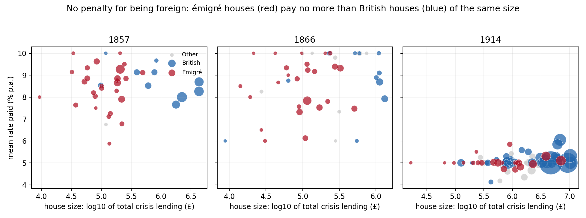
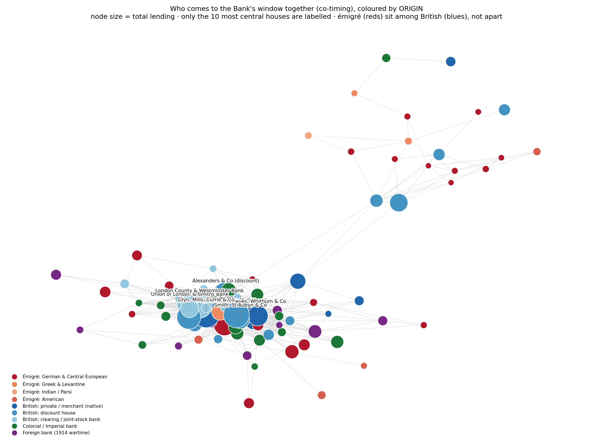
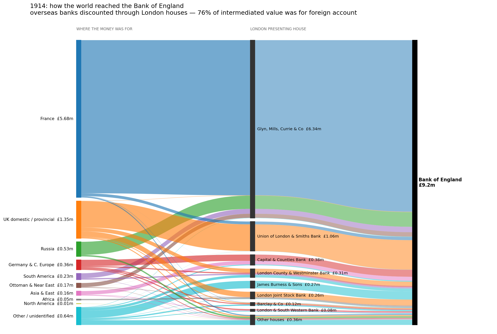
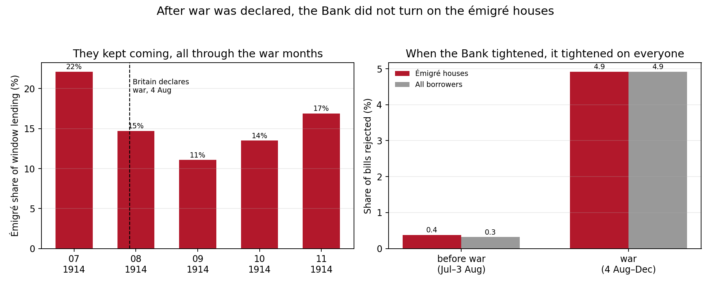
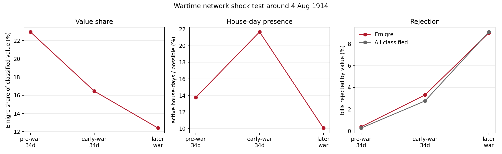

A data history of the cosmopolitan City · 1857 — 1914 · HSS207/DHS211
The Bank's ledgers called them customers. Parliament called them aliens.
The foreign banking families of the City of London — Schröder, Huth, Kleinwort,
Ralli — are remembered as outsiders slowly let in. Three crisis ledgers of the Bank of England say
otherwise: they were already inside, until the First World War redrew the line around them.
Biruk Kassa · Student 20220775 · Introduction to Digital History · June 2026
— read the paper (pdf) ↗
3crises with surviving ledgers — 1857 · 1866 · 1914
≈9,000individual loans & discounts recorded
45émigré houses identified at the window
81%of lent value assigned to a named house
PROLOGUE
Three days to stop being German
In the first days of August 1914, as Britain went to war with Germany, the banker Bruno
Schröder rushed to become a British subject. He ran J. Henry Schröder & Co., one of the most
respected houses in the City, but he had never given up his German citizenship, and the law now treated
him as an enemy alien. Unless he naturalised, the government could seize his firm.
The London Gazette · naturalisationNo. 28892 · p. 7033
Schroder, Rudolf Bruno; Germany; Banker; 35 Park Street, London.
Oath of allegiance — 7 August 1914, three days after the declaration of war.
verified against the primary record · the firm survived (Roberts 1992)
It is a strange story when you think about it: a man could run a central London bank for decades and
still become a suspect overnight. That is the puzzle this project starts from. Were the City's foreign
origin banking houses — the émigré houses — actually outsiders?
The answer comes from setting two records side by side. The Bank of England's crisis ledgers, read with
simple data and network methods, show integration. The wartime debates in Parliament, read with text
mining, show exclusion. The "outsider" status of these houses was never an economic fact. It was
political, and it came suddenly in 1914.
Why this topic
The Schröder story is what got me interested first, because it seemed strange that a banker could be
forced to swear an oath three days into a war just to keep his firm. It made me think about how a label
like foreign can change someone's life even when it says nothing about what they have actually done,
which is something people still argue about today. I also wanted a question I could test against real
records instead of just retelling what other books say, and the Bank's ledgers let me do that. The period
interested me too, since the years before 1914 were a very open time for international finance, and I
wanted to see how much that openness was really worth once the war put it under pressure.
I
The sources
Two datasets stand behind the paper — one that already existed, one built by hand for
this project — and to read the results properly you need to tell them apart.
borrowedprimary source
The Bank of England crisis ledgers
The Bank's historical dataset on lending of last resort, released with a staff working paper
(Anson, Bholat, Kang & Thomas 2017). The Bank's archivists found the handwritten crisis ledgers and
typed them into a clean dataset anyone can
download for free.
Each of its ≈9,000 rows is one loan or discount: the firm's name, the date, the amount, the rate, how
much of the bill was accepted and how much rejected — and, for 1914, whose account the bill really
served. These few columns are the raw material for every number on this page.
hand builtthis project
The origin register
The ledgers give names, amounts and rates, but nothing about where a firm came from. That part was
added by hand: a biographical database with one row per house — its likely origin (German, Greek,
Parsi, American, native British…), its founder and founding year where they could be found, and its
fate in the First World War — drawn from the standard histories of the City (Cassis 1994; Chapman 1984;
Kynaston 1995; Jones 1993). Every row carries a confidence label, so a reader can see which entries are
solid and which are a best guess from thin evidence.
verificationprimary source
The London Gazette check
Because the register began as a reading of secondary books, its key claims were checked against the
official record of the British state — the London
Gazette, which prints naturalisations, liquidations, and the wartime orders that seized enemy
property. Schröder's naturalisation appears there with its exact date; so do the orders winding up the
German bank branches. For the neutral houses, Danish Hambro and Dutch Blydenstein, no such order
exists — which is the right test that they were spared.
borrowedprimary source
The Hansard debates, 1914–18
Eight debates of the Commons and the Lords on enemy aliens and German banks in London, from the
official Hansard record. These are the
words politicians used about foreign banks during the war — they let the project compare what the Bank
actually did with what politicians were saying.
cleaningentity resolution
Linking names across crises
The same house appears under different spellings — "J H Schroder", "J.H.Schroder", even
"S.N.Schroder"; Frühling & Goschen once appears as Truhling & Goschen, where the scanner
read an F as a T. Hand written matching rules join these variants into single houses, so a firm can be
followed from 1857 to 1914.
II
How far to trust it
No source is perfect, so the weak spots are stated upfront rather than buried. Four
matter most.
01
The ledgers only show who borrowed
A house that did not borrow is simply absent, so every share reported here is a share of crisis
borrowing, not of the whole City. This selection effect is built into the source and limits what the
project can claim.
02
The transcription is not flawless
The ledgers were typed from Victorian handwriting. The same house turns up under garbled spellings,
and at least one name was misread by the scanner. A few faint entries may still be wrong even after the
names were repaired by hand.
03
The register is interpretation
The origin register was assembled from secondary histories, so its softer rows are interpretations
rather than facts. Low confidence rows are starting points that need more checking, and the origin
buckets — German, Greek, Parsi — are coarse, hiding real differences inside each group.
04
Small numbers, rough estimates
Most houses appear a handful of times, so this is a study of patterns and named cases, not large
statistical tests; the one regression is a rough check. And the debates mix general alien talk with the
banks, so the word counts capture a mood, not a precise measurement.
None of this sinks the argument, which rests on several independent
signals that agree — but every number below should be read as a reasonable estimate, not an exact figure.
Each one can be regenerated from the scripts and CSVs in the project repository.
III
Four methods, matched to their sources
w12database
Descriptive statistics over a hand built database
Shares of lending, average rates, counts of who appears in which crisis. The ledgers are lists of
amounts and rates; shares and averages are the plain way to summarise lists.
w4networks
Network analysis
Did the émigré houses cluster apart? How did money flow through London in 1914? Did the lending
network change when war was declared? A network is the natural tool for asking who clustered with
whom.
w3text
Text mining the wartime debates
Counting words across eight Hansard debates. The reversal happened mostly in language — in words
like alien and enemy repeated across many speeches — and counting is how you show a
pattern no single quotation could prove.
spineprosopography
Prosopography
The register itself: studying a group through the collected life facts of its members. Underneath
every chart on this page sits that biographical table.
IV
The evidence: insiders, not outsiders
If the émigré houses were really outsiders, the records should show it — small amounts,
higher prices, paper turned away more often than everyone else's. The ledgers show none of that. Four
simple checks all give the same answer.
Who borrowed at the window
plate i
share of window lending by origin group, per crisis (%). red shades — émigré houses;
grey — british & other. émigré totals: 12.5% (1857) · 10.9% (1866) · 15.1% (1914), highest on the
eve of the reversal. hover for values.
CHECK 1The same names kept coming back
Six houses appear in all three crises — Huth, Brandt, Kleinwort, Raphael, Frühling &
Goschen, Ralli. A house that shows up at the Bank in panic after panic for nearly sixty years is no
newcomer. The full register is below: filter it, sort it.
//
house
origin
present
total borrowed £ ↓
source: outputs/tables/emigre_house_arc.csv · × all rows are émigré houses · click the £ column to flip sort
CHECK 2They sat among the biggest borrowers
In 1857, twelve of the twenty largest borrowing houses were émigré firms. The count falls
in later crises — but that is not decline: their overall share rose to its highest in 1914. What changed is
the company at the top, as a few giant clearing banks and discount houses came to borrow enormous single
amounts. The émigré houses had not shrunk. The banks next to them had just grown much bigger.
//
nº
house
origin
borrowed £
× émigré houses marked in red
CHECK 3Their paper was not turned away
When a firm brought bills to discount, the Bank could refuse any it doubted. In every
crisis the émigré houses were refused at or below the average for all borrowers; only the old English
private banks were trusted slightly more. The émigré houses sat well inside the Bank's normal circle of
trust.
Share of bill value rejected
plate ii
lower = more trusted. per crisis, %.
CHECK 4No penalty for being foreign
Raw averages actually favour the émigré houses — they paid a little less than
native British merchants in every crisis. But big houses get better rates, and the émigré group held some
very big houses. Hold size level and the gap disappears: a simple model per crisis finds an émigré effect
on the rate that cannot be told apart from zero — in 1914, about minus one hundredth of one percent.
This is not a special discount. It is the ordinary price for their size. There was no foreign
surcharge — and a market that distrusted them would have charged one.
The émigré effect on the rate
plate iii
dot — estimated extra rate for émigré houses once size is held level; bar — 95% range.
every range crosses zero.

rate against house size; each point one house in one crisis, émigré in red, british in blue.
same size, same price. click to enlarge.
CHECK 5And no émigré enclave in the network
Link two houses when they came to the Bank on the same ledger days more often than
chance. If the émigré houses were a separate club, émigré–émigré links should be common. Shuffle the
origin labels 1,000 times across the same graph and the shuffles produce more émigré clustering
than the real network shows. They came to the window woven among native houses — not as a foreign
corner.

the co-presence network, coloured by origin. click to enlarge.
Real network vs 1,000 shuffles
plate iv
share of weighted links, all crises pooled, %.
There was no foreign surcharge. A market that distrusted them would have charged one.
— from §5 of the paper
V
1914 — London as the world's window
The 1914 ledger records whose account each bill really served. It catches the Bank of
England acting as a discount window for much of the world — with London's houses as the middlemen who
carried foreign bills to its door.
About 76 percent of the intermediated value was for overseas banks and firms. The largest single flow —
some £5.7m from Crédit Lyonnais — passed almost entirely through one British house, Glyn, Mills,
Currie & Co. So this clearing role belonged to the City as a whole, not to the émigré houses in
particular. The émigré point in 1914 is about size: their share of the window peaked, at about fifteen
percent, just as London was doing its most international work.
Who the bills were really for
plate v
value of intermediated bills by beneficiary type, 1914.
The conduits
plate vi
london houses by value carried to the bank on others' account. the largest, in red, is
glyn mills — a british house clearing for france.

how the world reached the bank of england in 1914 — foreign account, london house, bank.
ribbon width is value. click to enlarge.
VI
The reversal — made foreign in 1914
The change does not appear in the Bank's ledgers. It appears in Parliament. Across eight
debates between 1914 and 1918 the language is blunt — and beside it runs a vocabulary of shutting down:
trading with the enemy, the Public Trustee, sequestration, wound up, sold by auction.
word counts across the eight hansard debates, 1914–18 · source: outputs/tables/hansard_lexicon_counts.csv
This is not the language of a market weighing who is creditworthy. It is political language, about who
belongs. And the actions matched the words: the London branches of Deutsche Bank, Dresdner Bank and the
Disconto-Gesellschaft were placed under a government Controller and wound up under the Trading with the
Enemy Acts. Frühling & Goschen, a German named private house, was folded into Goschen & Cunliffe
by 1920. Schröder survived only because its senior partner naturalised at once.
Another telling detail is who was spared. Danish Hambro and Dutch Blydenstein were left alone, because
Denmark and the Netherlands were neutral. The line that fell across the City in 1914 was not between
British and foreign at all. It was between Britain's friends and Britain's enemies in this particular
war. A German name was now a danger; a Danish one was not.
THE REGISTERWhat happened to each house
Every house seen at the 1914 window, with its wartime fate and the
confidence of the underlying evidence. Filter, or search a name.
////
house
origin
fate in the war
conf.
source: outputs/tables/wwi_fate.csv, checked against the london gazette where possible · "—" no specific wartime event recorded
THE CONTROLAnd the Bank? It did not flinch
The 1914 ledger straddles the declaration of war on 4 August, so both records can be
watched in the same months. The émigré houses kept coming to the window right through the autumn, holding
eleven to seventeen percent of the Bank's lending every war month. The Bank did grow more careful once
the panic hit — but for everyone at once. In the same weeks Parliament called these houses enemies, the
Bank treated them as ordinary customers.
Rejection around the outbreak of war
plate vii
share of bill value rejected, %. the bank tightened for everyone at once — not for the
émigré houses in particular.

month by month through 1914 — the émigré share holds double digits all war; rejection rises
after august for everyone equally.

the network shock test around 4 august 1914 — the window changed, but no targeted exclusion.
They were in, and then they were pushed out — by forces that had nothing to do with
banking.
— two archives, opposite stories
The ledgers measure economic behaviour, which had made these houses central over many decades. The
debates measure political status, which changed almost overnight when the war began. What the sources
show is a fast political exclusion that came after decades of economic inclusion. Their foreignness was
not a fact about their banking. It was a label — applied suddenly, by a wartime state and an anxious
public, and unevenly: falling on enemies, sparing neutrals.
APPENDIX A
Glossary, in plain words
APPENDIX B
Use of AI
In the interest of honesty, AI tools were used at a few points in this project.
1thinking
As a thought partner
Pitching ideas and plans, and getting a better understanding of feasibility, where open data
archives might be, and so on.
2finding
Dataset search
In addition to manual searching of open archives, ChatGPT helped automate the hunt for datasets.
3processing
Data processing
AI helped with cleaning and structuring the ledger data — matching the many spellings of each house
into single firms, organising the origin register.
4building
Code debugging and generation
The code used for the data analysis and this website was written in collaboration with AI,
specifically Claude.
5polish
Grammar checking and final polish
After the writing was drafted by hand, AI fixed grammar mistakes and imprecise wordings.
APPENDIX C
References
Anson, M., Bholat, D., Kang, M. & Thomas, R. (2017). The Bank of England as lender of last
resort: new historical evidence from daily transactional data. Bank of England Staff Working Paper 691.
Bank of England (2017). The Bank of England as lender of last resort: historical dataset.
Bagehot, W. (1873). Lombard Street: A Description of the Money Market.
Cassis, Y. (1994). City Bankers, 1890–1914. Cambridge University Press.
Chapman, S. (1984). The Rise of Merchant Banking. George Allen & Unwin.
Hansard. HC & HL debates on alien enemies and German banks in London, 1914–18 — HC Deb 17 Sep 1914;
16 Nov 1914; 3 Mar 1915; 31 Oct 1916; 21 Nov 1916; 20 Mar 1918.
Jones, G. (1993). British Multinational Banking, 1830–1990. Oxford University Press.